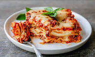

Lasagna Recipe

World Famous Lasagna
This is the recipe for Odin's world famous lasagna. This simple recipe is perfect for a week night dinner that the whole family will love.
Ingredients
Cheese filling
- 15 oz ricotta cheese
- 1 egg
- 2 cups mozzarella cheese
- 3/4 cups parmesan cheese
- 2 tsp Italian seasoning
- 1/2 tsp salt
- 1/4 tsp pepper
Meat Sauce
- 1 tbsp olive oil
- 1 yellow onion
- 3/4 lb. ground beef
- 3/4 lb. ground Italian sausage
- 3 cloves garlic
- 1/2 cup chicken broth
- 40 oz marinara sauce
- 1 tbsp tomato paste
- 1 tsp hot Sauce
- 1 tsp worcestershire Sauce
Lasagna
- 12 lasagna noodles
- 2.5 cups mozzarella cheese
Steps:
- Combine the cheese filling ingredients in a medium bowl and set aside. Measure out remaining ingredients.
Make the Meat Sauce
- Heat olive oil over medium heat and add the diced onions. Let them soften for 10 minutes. (This allows them to release a little sugar which is a nice offset to the acidity of the tomatoes.)
Add the ground beef and sausage and increase heat to medium-high. Use a spatula to break up the meat so that it’s very fine and crumbled. Cook for 8-10 minutes, or until cooked through. Add garlic during the last minute. Drain excess grease.
Add the chicken broth and use a silicone spatula to “clean” the bottom and sides of the pot. Add the marinara sauce, tomato paste, hot sauce, and Worcestershire sauce. Bring to a boil, then reduce to a simmer. Cover partially and let the sauce simmer gently.
Preheat Oven and Cook the Lasagna Noodles
- Preheat oven to 375°.
Begin boiling a large pot of salted pasta water for the lasagna noodles. Once a rapid boil is reached, cook the noodles to al dente according to package instructions. (Set a timer to ensure you don’t overcook them.) Gently stir with a wooden spoon throughout cooking to prevent the noodles from sticking. Drain and rinse with cold water until noodles are completely cool.
Lay the cooled noodles flat on wax or parchment paper while you begin assembling the lasagna.
Assemble
- Spread 1 heaping cup of meat sauce on the bottom of a 9 x 13-inch casserole dish. Next, add 4 lasagna noodles, overlapping them if needed.
Spread 1/3 of the ricotta cheese mixture over the noodles, followed by about 1 ½ cups of meat sauce.
Top with 4 more lasagna noodles, 1/3 of the ricotta cheese mixture, 1 ½ cups meat sauce.
Finish with 4 more lasagna noodles, the rest of the ricotta mixture, and the rest of the meat sauce.
Top with 2 ½ cups of Mozzarella cheese.
- Spray foil with nonstick cooking spray and place it spray-side-down on top of the baking dish to prevent the cheese from sticking to it.